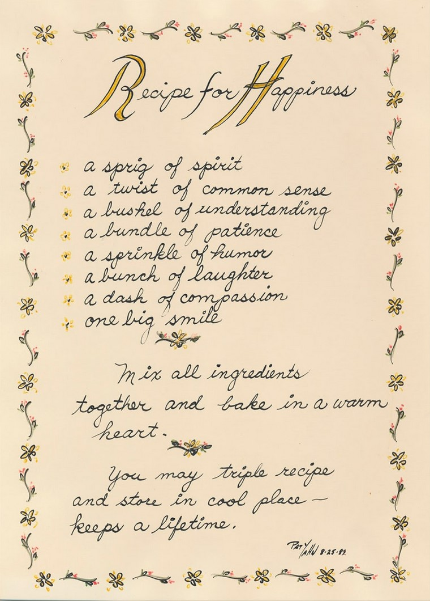

About the Patricia Yahn Spring Art Show
This celebration of the arts wouldn't be possible without the warmth, inspiration, and support of Pat Yahn. Pat has been a pillar for the arts in the Erie community her whole life. With this art show, we wish to honor and commemorate her and her countless contributions towards helping Penn State Behrend artists flourish, as well as the Erie community as a whole.
"Where would we be without the arts?"
"You need some joy in your life after all the serious business we handle day after day, good or bad."
- Patricia Yahn
